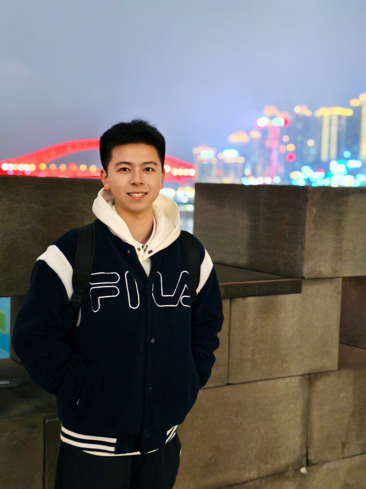
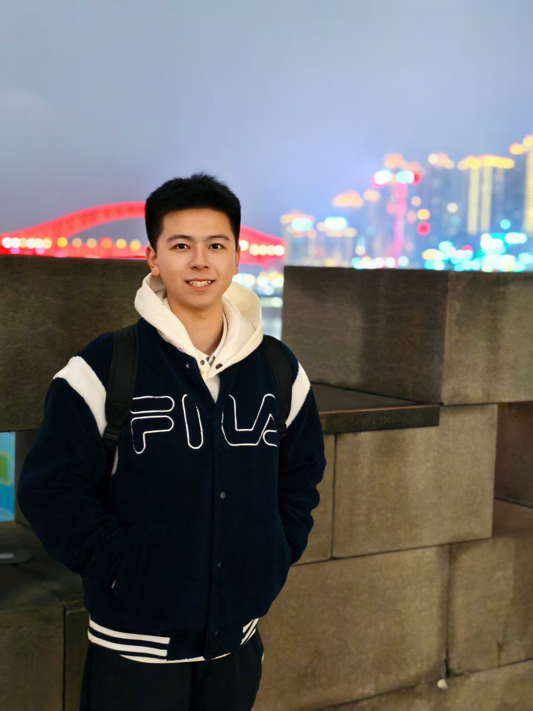
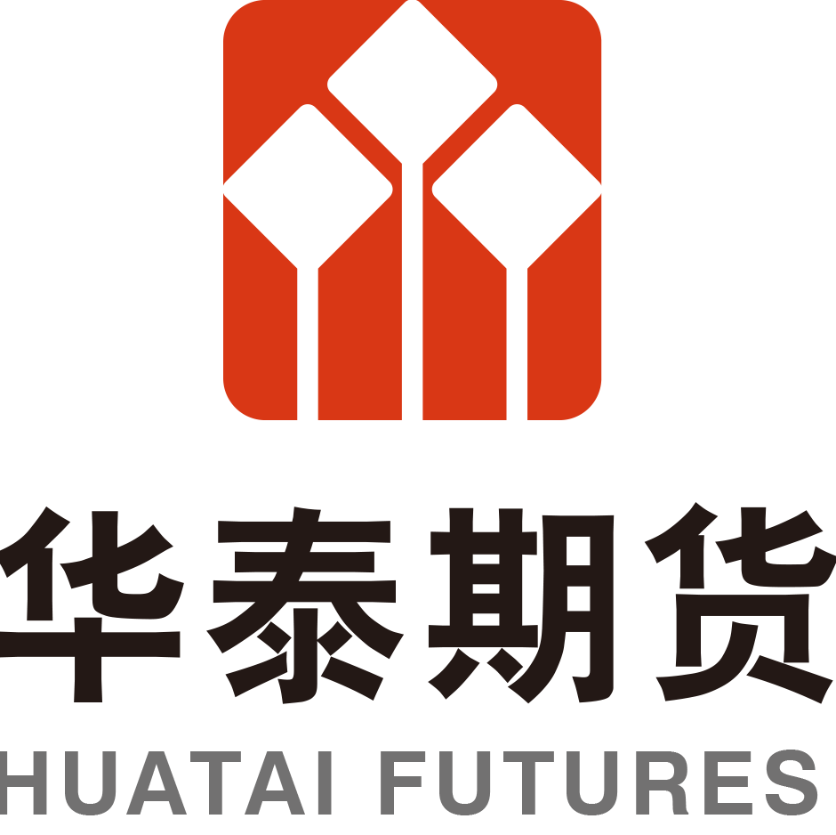

- Independently wrote and published multiple natural gas thematic reports covering Central Asia, the Eastern Mediterranean and other regions; analyzed geopolitical dynamics and energy structures, highlighting the impact of policy and capacity shifts on global markets.
- Maintained weekly and monthly industry databases; used Bloomberg, Wind, and iFind for high-frequency data collection and outlier checks to ensure consistency and traceability.
- Produced more than 30 analytical summaries of OPEC, EIA and other institutional reports, extracting insights on production adjustments, inventory changes and demand forecasts; supported the operation of the research institute’s official account, averaging 200+ reads per post.
- Participated in expert interviews along the industry chain, compiling key takeaways to support trading strategies and macro assessments.
🎓 Education
The Chinese University of Hong Kong, Shenzhen
QS World University Rankings 2026: #32
B.B.A. in Finance (School of Management and Economics)
09/2022 - 07/2026
GPA: 3.7/4.0
Key courses: Risk Management, Econometrics, Investment & Portfolio Management, Corporate Finance, Financial Markets, Alternative Investments, Derivatives, Behavioral Finance, Optimization
💼 Internships
 Huatai Futures Co., Ltd.
Energy Group Intern
Research Institute
Advisor: Mr. Xiang Pan
Location: Shenzhen, China
08/2025 - 11/2025
China Merchants Futures Co., Ltd.
Middle Office Assistant Intern
Marketing & Asset Management Department
Advisor: Mrs. Yan Yang
Location: Shenzhen, China
05/2025 - 08/2025
- Reviewed and archived 300+ institutional account-opening and maintenance documents, conducting completeness checks in strict alignment with compliance requirements.
- Worked with risk, compliance and operations teams to optimize the document review SOP, reducing rework rates by 25%.
- Used Excel VBA to automate duplicate-field detection and classification, reducing manual entry errors and improving processing efficiency by 30%.
- Completed due diligence on 30+ institutional clients, analyzing ownership structures, business models and performance history to identify potential compliance and operational risks.
- Prepared 10+ hedging and adjustment analyses, recommending differentiated hedge ratios based on clients’ physical exposure, term structure of contracts and basis volatility.
 AXA Hong Kong and Macau
AXA Hong Kong and Macau
Wealth Management Advisor
Asset Management Department
Remote
02/2025 - 03/2025
- Provided comprehensive wealth planning services for high-net-worth individuals, covering tax optimisation, asset allocation, risk management, and intergenerational wealth transfer.
- Independently designed a personalised family asset allocation strategy that achieved both capital preservation and growth goals.
Monte Carlo Fund Management Co., Ltd.
FOF Researcher
Strategy Research Department
Advisor: Prof. Xianghui Yuan (School of Economics and Finance of Xi'an Jiaotong University)
Location: Xi’an, China
12/2024 - 02/2025
- Conducted due diligence on 10+ private fund managers, assessing strategy frameworks, investment processes, risk controls and historical drawdowns; completed over 50 pages of DD reports supporting FOF portfolio construction.
- Backtested CTA and arbitrage strategies using HuoFuNiu and JoinQuant, generating return and drawdown analyses that were later incorporated into the firm’s core investment pool.😎
- Used Python to perform single-factor tests (momentum, reversal, volatility), completing IC calculations, portfolio grouping backtests and sensitivity analysis on rebalancing frequency.
 Sealand Securities Co., Ltd.
Sealand Securities Co., Ltd.
Wealth Advisor
Wealth Management Department
Advisor: Mr. Hairui Zuo
Location: Xi’an, China
05/2024 - 06/2024
- CParticipated in designing and implementing asset allocation plans based on client KYC results; supported over 30 clients with a renewal rate of 92%.
- Prepared customized investment briefs integrating client holdings with market themes to strengthen engagement and trust.
- Helped organize investor education sessions, explaining asset allocation fundamentals and long-term investment concepts; recognized by supervisors and awarded “Outstanding Intern”.
📝 Projects
Tencent Future Product Manager Bootcamp
Project Introduction: This creation camp is a special training program jointly launched by Tencent Recruitment and Tencent Academy, aiming to cultivate potential product managers for the Internet industry.
July. 2025
- Theoretical learning: Systematically studied product management courses, covering theory and cases.
- Tool practice: Used professional tools to complete the project and improve practical ability.
- Project practice: Practical project topics to improve product knowledge and skills in all aspects.
- Certificate awarded: Obtained the Tencent Product Manager Completion Certificate, and the ability was officially recognized.
P/B Factor Strategy Research
Subject: Investment Analysis and Portfolio Management (FIN3080)
Instructor: Prof. Jingfan Zhang (CUHK-SZ)
Spring 2025
- Collected and cleaned A-share market data (2009–2023) from CSMAR, including monthly prices, quarterly financials, and daily volatility; constructed monthly P/B ratios and excluded outliers.
- Conducted a cross-sectional regression at end-2010, finding significant positive relationships between P/B, ROE, and volatility (R² = 13.3%).
- Built ten equal-weighted portfolios sorted by P/B deciles; backtested from 2010 to 2023 and found low P/B portfolios consistently outperformed high P/B ones, supporting value investing strategies.
- Completed the entire data pipeline, regression analysis, and visualization using Stata.
S&P Global Market Intelligence – Corporate Valuation Challenge
Project Title: Company Analysis of Sinopec Oilfield Service Corporation
Role: Team Leader & Financial Analyst
Oct. 2022
- Led a team in conducting an independent valuation of Sinopec Oilfield Service Corporation.
- Built a Discounted Cash Flow (DCF) model to evaluate intrinsic company value.
- Gathered and analysed industry trends and financial metrics to identify key valuation drivers, conducting sensitivity analysis to evaluate their impact on intrinsic value.
- Leveraged the S&P Capital IQ platform for financial data extraction, benchmarking, and peer comparison.
🌟 Scholarships & Honors
🏆 Awards
- In Progress ??/????
🏫 Exchange/Visiting Program
- COMM3939 Film Directors (Mr. SHIN Chi Man Thomas): Explored the relationship between the film and their directors regarding their creativity, aesthetics and influences. Film is an art and the director is an artist.
- UGEC1540 Government and Politics of China (Prof. Gerald CHAN): Surveied key issues in Chinese politics, including the historical background of the Chinese political system, the roles of the party/state, the style of leadership, the forms of popular participation, and the distinctive features of Chinese politics. The focus of this course is political change.
🏅 Competition Experiences
- 2025 U.S. Mathematical Contest In Modeling (MCM/ICM) 24/01/2025 - 28/01/2025
- 2023 China Undergraduate Mathematical Contest in Modeling (CUCMC)07/09/2023 - 10/09/2023
- 2022 S&P Global Corporate Valuation Challenge (CVC) 10/2022
🛠️ Certificates & Skills
- Certificates: IELTS 7.0, CET-6, CET-4
- Programming languages: Python (Familiar), R (Familiar), Stata (Familiar), SQLite (Basic)
- Tools: Word/PowerPoint/Excel(Proficient), Matlab, LATEX, Markdown, VSCode
- Database: Bloomberg, CSMAR, Choice, Wind, WRDS, JoinQuant Platform
🤝 Club & Extracurricular Activities
SME Toastmasters Club
Position: Member
09/2022-Present
- The SME Toastmasters Club is a speech club under the Career Development Center of the School of Management and Economics, The Chinese University of Hong Kong, Shenzhen. It aims to enhance members' English public speaking, communication and leadership skills through weekly meetings, corporate visits, workshops and other activities, and help them achieve their career development goals.
Harmonia College: Ancient Glass Art on the Silk Road
Advisor: Prof. Bohan Li (CUHK-SZ)
Location: Shenzhen Museum, Shenzhen
04/03/2023
- Went with Professor Bohan Li from the School of Humanities and Social Sciences to visit the Ancient Glass Art Exhibition on the Silk Road at the History and Folklore Museum of Shenzhen Museum.
- Organized discussions and shared experiences of the exhibition.